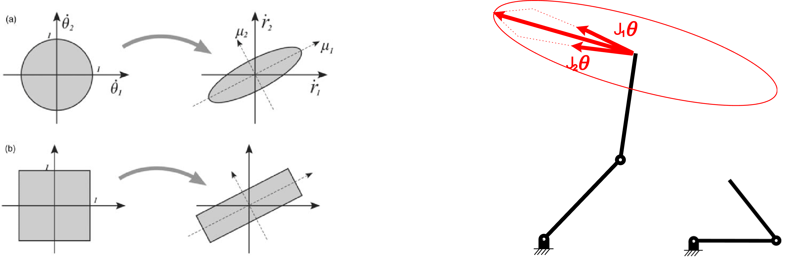

Differential Kinematics and the Jacobian
Introduction
In the previous topic, we studied inverse kinematics, where the main objective was to determine the joint variables required to place the end-effector at a desired position or pose.
Now we move one level deeper.
Instead of asking:
- Where is the robot?
we ask:
- How fast is the robot moving?
- How fast is the end-effector moving?
- What joint velocities are needed to produce a desired Cartesian motion?
- What happens to these velocities near problematic configurations?
This is the domain of differential kinematics.
Differential kinematics is important because robots do not only move between isolated points. In real applications, robots must move continuously, smoothly, and safely. To do that, we need a mathematical relationship between joint velocities and end-effector velocities.
That relationship is given by the Jacobian matrix.
1. Differential Kinematics
Differential kinematics studies the relationship between:
- joint velocities, and
- Cartesian end-effector velocities
For a manipulator with joint variables:
the joint velocity vector is:
At the end-effector, we define a Cartesian velocity vector. In the most general spatial case, this includes:
- linear velocity
- angular velocity
and is often grouped into the twist:
where:
- \(v \in \mathbb{R}^3\) is the linear velocity
- \(\omega \in \mathbb{R}^3\) is the angular velocity
The central equation of differential kinematics is:
where \(J(q)\) is the Jacobian matrix.
2. Jacobian Matrix
The Jacobian matrix is a transformation matrix that maps joint velocities to Cartesian end-effector velocities.
It is one of the most important tools in robotics because it connects motion in joint space with motion in task space.
The Jacobian depends on the robot configuration:
This means that the velocity relationship changes as the robot moves.
Applications of the Jacobian
The Jacobian tells us:
- how motion in each joint contributes to end-effector motion,
- how to compute end-effector velocity from known joint velocities,
- how to compute joint velocities needed for a desired Cartesian motion,
- whether the robot is near a singularity,
- how dexterous the robot is at a given pose,
- and later, how forces and torques are related.
So, while forward kinematics tells us where the robot is, the Jacobian tells us how it moves locally around its current configuration.
3. Forward Velocity Kinematics
Forward velocity kinematics computes the end-effector velocity from known joint velocities.
If the robot joint velocity vector is known:
then the end-effector velocity is computed as:
This is the velocity-level equivalent of forward kinematics.
Interpretation
- Forward kinematics:
$$ q \rightarrow x $$
- Forward velocity kinematics:
$$ \dot{q} \rightarrow \nu $$
This means that if each motor rotates at a certain speed, the Jacobian tells us the resulting linear and angular velocity of the end-effector.
Practical meaning
Suppose one joint moves faster than another. The resulting end-effector motion is not always intuitive because each joint contributes differently depending on:
- the robot geometry,
- the current pose,
- and the direction of motion.
The Jacobian captures all of that in matrix form.
4. Inverse Velocity Kinematics
Inverse velocity kinematics solves the opposite problem.
Instead of knowing the joint velocities and finding the end-effector velocity, we know the desired end-effector velocity and want to compute the required joint velocities.
Starting from:
we want:
if the Jacobian is square and invertible.
This process is called inverse velocity kinematics.
When the Jacobian is invertible
If the robot has the same number of controllable velocity outputs as joints, and the Jacobian is nonsingular, then:
When the Jacobian is not square
In many practical cases, the Jacobian is not square or is not invertible. In those cases, the standard inverse cannot be used.
Instead, we use a pseudoinverse, usually the Moore-Penrose pseudoinverse:
This is especially useful when:
- the robot has more joints than required by the task,
- the task controls only part of the end-effector motion,
- or we want a least-squares numerical solution.
The pseudoinverse is important because it provides a generalized inverse that can be used even when the Jacobian is rectangular.
Its practical interpretation is:
- if the desired Cartesian velocity can be achieved exactly, it returns a valid joint-velocity solution,
- if multiple solutions exist, it selects the one with minimum joint-velocity norm,
- if an exact solution is not possible, it returns the least-squares solution that minimizes the velocity error.
Common Moore-Penrose expressions are:
or
depending on the dimensions and rank of the Jacobian. In general numerical implementations, the pseudoinverse is often computed using singular value decomposition (SVD).
This is directly related to the iterative IK methods you already studied, because in both cases the Jacobian is used to map between Cartesian behavior and joint-space corrections.
Applications of inverse velocity kinematics
Inverse velocity kinematics is essential when we want the robot to:
- follow a straight Cartesian path,
- move with constant end-effector speed,
- track a desired trajectory,
- or smoothly move from one pose to another.
Instead of commanding positions one by one, we command velocity behavior.
5. Singularities
A singularity is a robot configuration where the Jacobian loses rank.
At such a configuration, the robot loses mobility in one or more directions in Cartesian space.
Mathematically, a singularity occurs when the Jacobian becomes non-invertible.
For a square Jacobian, this means:
For a more general case, it means the Jacobian rank decreases.
What happens at a singularity?
At or near a singularity:
- some Cartesian directions become unreachable in velocity,
- the robot loses one or more degrees of freedom locally,
- small Cartesian velocity commands can require extremely large joint velocities,
- numerical solutions become unstable.
This is why singularities are so important in robotics.
Physical interpretation
A singularity does not necessarily mean the robot is broken.
It means that at that configuration, the robot cannot move equally well in all directions.
For example, a fully stretched arm may not be able to generate velocity in a certain Cartesian direction even though the motors are still moving.
Applications of singularities
Near singularities:
- joint speeds may become very large,
- actuators may saturate,
- control becomes less reliable,
- trajectory tracking becomes poor.
So even if a pose is reachable from a position perspective, it may still be problematic from a velocity perspective.
6. Velocity Ellipsoids
A velocity ellipsoid is a geometric tool used to visualize how easily the robot can move in different Cartesian directions at a given pose.

It is derived from the Jacobian and helps us understand the robot’s dexterity.
Interpretation of the ellipsoid
- A large radius in a direction means the robot can move easily and quickly in that direction.
- A small radius in a direction means the robot has poor mobility in that direction.
- A very narrow ellipsoid indicates the robot is close to singularity.
- A more circular or spherical ellipsoid indicates more uniform dexterity.
So the velocity ellipsoid gives a visual representation of how capable the robot is of generating motion in different directions.
Applications of velocity ellipsoids
Velocity ellipsoids help us:
- visualize dexterity,
- compare configurations,
- detect poor motion directions,
- understand singularities,
- and choose better poses for performing tasks.
This is especially useful in design, planning, and manipulator analysis.
7. Applications of Velocity Analysis
Velocity is not only a mathematical concept. It is fundamental to real robot behavior.
In practice, controlling velocities matters for several reasons.
7.1 Smooth robot motion
If we only think in terms of positions, the robot jumps conceptually from one point to another.
But real robots must move continuously.
Velocity control allows us to define:
- how fast the robot moves,
- in what direction it moves,
- and how smoothly it transitions between points.
This is essential for safe and realistic operation.
7.2 Trajectory tracking
Trajectory planning does not only define positions.
A complete trajectory usually includes:
or, in Cartesian space:
That means velocity is a necessary intermediate step between kinematics and full trajectory generation.
Without velocity analysis, trajectory planning is incomplete.
7.3 Actuator limits
Motors do not have infinite speed.
If a Cartesian command requires very large joint velocities, the robot may not be able to execute it.
This is especially important near singularities.
So velocity analysis helps determine whether a desired motion is physically feasible.
7.4 Velocity, actuator effort, and motion feasibility
Velocity is not only important for describing motion. It also affects how demanding that motion is for the robot.
In practice, a robot is never asked to move in an abstract mathematical space. Every commanded motion must eventually be produced by real actuators with limited speed, torque, and power.
For that reason, velocity analysis helps answer questions such as:
- whether a motion is physically feasible,
- whether the required joint rates are too large,
- whether the robot is moving near a problematic configuration,
- and whether a desired path can be followed smoothly.
This is especially important near singularities, where even a small Cartesian velocity may require very large joint velocities. In such cases, the motion may be mathematically defined but difficult or impossible to execute safely on the real robot.
Velocity is also closely related to actuator effort. In later analysis, torque requirements will depend not only on robot position, but also on how fast the joints move and how quickly that motion changes. For this reason, differential kinematics is an essential step in understanding both motion quality and motion feasibility.
8. Velocity in trajectory generation
A robot trajectory is not just a sequence of positions.
To move smoothly from one configuration to another, the robot must follow a motion that evolves over time. That means a complete trajectory must include not only position, but also velocity, and often acceleration.
This makes velocity a fundamental part of trajectory generation.
When a path is defined in Cartesian space, the Jacobian allows us to determine what joint velocities are required to produce that motion. In this way, differential kinematics connects the desired motion of the end-effector with the actual motion that must occur at the joints.
This is essential for generating motions that are:
- smooth,
- feasible,
- safe,
- and compatible with actuator limits.
Without velocity analysis, it is possible to define a path geometrically but still have no guarantee that the robot can follow it properly.